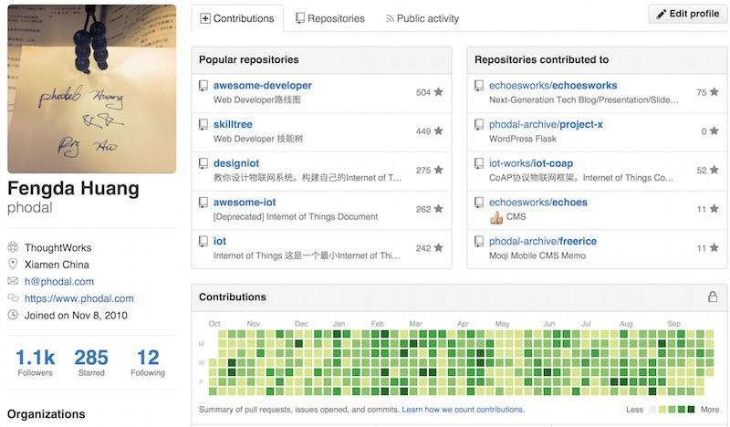
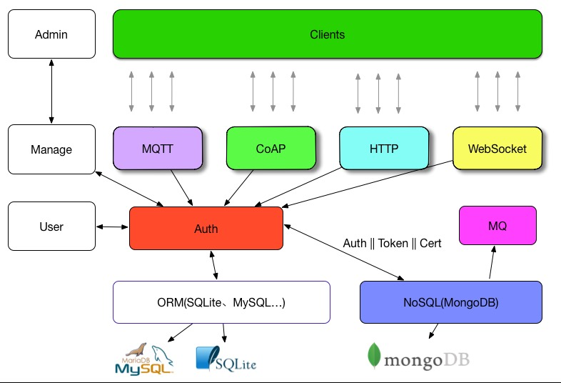

the link of articles
给你一年的时间，你会怎样去提高你的水平？？？

Github 365
正值这难得的sick leave（万恶的空气），码文一篇来记念一个过去的366天里。尽管想的是在今年里写一个可持续的开源框架，但是到底这依赖于一个好的idea。在我的Github 孵化器 页面上似乎也没有一个特别让我满意的想法，虽然上面有各种不样有意思的ideas。多数都是在过去的一年是完成的，然而有一些也是还没有做到的。
说说标题
尽管一直在Github上连击看上去似乎是没有多大必要的，但是人总得有点追求。如果正是漫无目的，却又想着提高技术的同时，为什么不去试试？毕竟技术非常好、不需要太多练习的人只是少数，似乎这样的人是不存在的。大多数的人都是经过练习之后，才会达到别人口中的“技术好”。
这让我想起了充斥着各种气味的知乎上的一些问题，在一些智商被完虐的话题里，无一不是因为那些人学得比别人早——哪来的天才？所谓的天才，应该是未来的智能生命一般，一出生什么都知道。如果并非如此，那只是说明他练习到位了。
练习不到位便意味着，即使你练习的时候是一万小时的两倍，那也是无济于事的。如果你学得比别人晚，在很长的一段时间里(可能直到进棺材)输给别人是必然的——落后就要挨打。就好像我等毕业于一所二本垫底的学校里，如果在过去我一直保持着和别人(各种重点)一样的学习速度，那么我只能一直是Loser。
需要注意的是，对你来说考上二本很难，并不是因为你比别人笨。教育资源分配不均的问题，在某种程度上导致了新的阶级制度的出现。如我的首页说的那样: THE ONLY FAIR IS NOT FAIR——唯一公平的是它是不公平的。我们可以做的还有很多——CREATE & SHARE。真正的不幸是，因为营养不良导致的教育问题。
于是在想明白了很多事的时候起，便有了Re-Practise这样的计划，而365天只是中间的一个产物。
编程的基础能力
虽说算法很重要，但是编码才是基础能力。算法与编程在某种程度上是不同的领域，算法编程是在编程上面的一级。算法写得再好，如果别人很难直接拿来复用，在别人眼里就是shit。想出能work的代码一件简单的事，学会对其重构，使之变得更易读就是一件有意义的事。
于是，在某一时刻在Github上创建了一个组织，叫Artisan Stack。当时想的是在Github寻找一些JavaScript项目，对其代码进行重构。但是到底是影响力不够哈，参与的人数比较少。
重构
如果你懂得如何写出高可读的代码，那么我想你是不需要这个的，但是这意味着你花了更多的时候在思考上了。当谈论重构的时候，让我想起了TDD(测试驱动开发)。即使不是TDD，那么如果你写着测试，那也是可以重构的。(之前写过一些利用Intellij IDEA重构的文章：提炼函数、以查询取代临时变量、重构与Intellij Idea初探、内联函数)
在各种各样的文章里，我们看到过一些相关的内容，最好的参考莫过于《重构》一书。最基础不过的原则便是函数名，取名字很难，取别人能读懂的名字更难。其他的便有诸如长函数、过大的类、重复代码等等。在我有限的面试别人的经历里，这些问题都是最常见的。
测试
而如果没有测试，其他都是扯淡。写好测试很难，写个测试算是一件容易的事。只是有些容易我们会为了测试而测试。
在我写EchoesWorks和Lan的过程中，我尽量去保证足够高的测试覆盖率。
lan
EchoesWorks
从测试开始的TDD，会保证方法是可测的。从功能到测试则可以提供工作次效率，但是只会让测试成为测试，而不是代码的一部分。
测试是代码的最后一公里。所以，尽可能的为你的Github上的项目添加测试。
编码的过程
初到TW时，Pair时候总会有人教我如何开始编码，这应该也是一项基础的能力。结合日常，重新演绎一下这个过程：
有一个可衡量、可实现、过程可测的目标
Tasking (即对要实现的目标过程进行分解)
一步步实现 (如TDD)
实现目标
放到当前的场景就是：
我想在Github上连击365天。对应于每一个时候段的目标都应该是可以衡量、测试的——即每天都会有Contributions。
分解就是一个痛苦的过程。理想情况下，我们应该会有每天提交，但是这取决于你的repo的数量，如果没有新的idea出现，那么这个就变成为了Contributions而Commit。
一步步实现
在我们实际工作中也是如此，接到一个任务，然后分解，一步步完成。不过实现会稍微复杂一些，因为事务总会有抢占和优先级的。
技术与框架设计
在上上一篇博客中《After 500: 写了第500篇博客，然后呢?》也深刻地讨论了下这个问题，技术向来都是后发者优势。对于技术人员来说，也是如此，后发者占据很大的优势。
如果我们只是单纯地把我们的关注点仅仅放置于技术上，那么我们就不具有任何的优势。而依赖于我们的编程经验，我们可以在特定的时候创造一些框架。而架构的设计本身就是一件有意思的事，大抵是因为程序员都喜欢创造。(ps:之前曾经写过这样一篇文章，《对不起，我并不热爱编程，我只喜欢创造》)
创造是一种知识的再掌握过程。
回顾一下写echoesworks的过程，一开始我需要的是一个网页版的PPT，当然这类的东西已经有很多了，如impress.js、bespoke.js等等。分析一下所需要的功能：markdown解析器、键盘事件处理、Ajax、进度条显示、图片处理、Slide。我们可以在Github上找到各式各样的模块，我们所要做的就是将之结合在一样。在那之前，我试着用类似的原理写（组合）了Lettuce。
组合相比于创造过程是一个更有挑战性的过程，我们需要在这过程去设计胶水来粘合这些代码，并在最终可以让他工作。这好比是我们在平时接触到的任务划分，每个人负责相应的模块，最后整合。
想似的我在写lan的时候，也是类似的，但是不同的是我已经设计了一个清晰的架构图。

Lan IoT
而在我们实现的编码过程也是如此，使用不同的框架，并且让他们能工作。如早期玩的moqi.mobi，基于Backbone、RequireJS、Underscore、Mustache、Pure CSS。在随后的时间里，用React替换了View层，就有了backbone-react的练习。
技术同人一样，需要不断地往高一级前进。我们只需要不断地Re-Practise。
领域与练习
说业务好像不太适合程序员的口味，那就领域吧。不同行业的人，如百度、阿里、腾讯，他们的领域核心是不一样的。
而领域本身也是相似的，这可以解释为什么互联网公司都喜欢互相挖人，而一般都不会去华为、中兴等非互联网领域挖人。出了这个领域，你可能连个毕业生都不如。领域、业务同技术一样是不断强化知识的一个过程。Ritchie先实现了BCPL语言，而后设计了C语言，而BCPL语言一开始是基于CPL语言。
领域本身也在不断进化。
这也是下一个值得提高的地方。
其他
是时候写这个小结了。从不会写代码，到写代码是从0到1的过程，但是要从1到60都不是一件容易的事。无论是刷Github也好(不要是自动提交)，或者是换工作也好，我们都在不断地练习。
而练习是要分成不同的几个步骤，不仅仅局限于技术：
编码
架构
设计
。。。
原文: https://www.phodal.com/blog/github-365-days-review/
欢迎微博关注: @Phodal